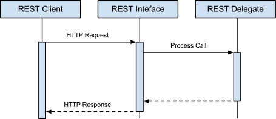
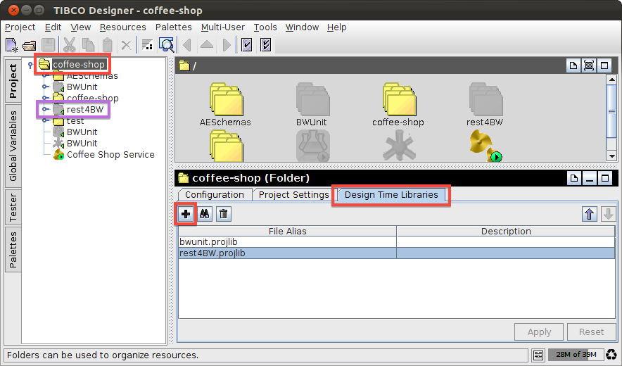
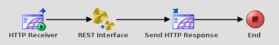
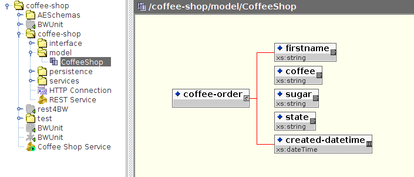
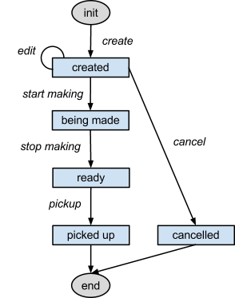

rest4BW™ provides a framework to facilitate the task of building REST
services in TIBCO BusinessWorks.
Out of the box, it provides Query, Accept Header and MultiPart Mime parsing of
HTTP requests, and HTTP Status Code schemas to facilitate building HTTP
responses.
If you want to see an example of the rest4BW™ in use, please check out the Coffee Shop Example under the Source Code section.
The framework was developed with the following software versions, and has not been tested for backwards compatibility. It is recommended to use the same, or a newer version when developing with rest4BW™.
| Software | Version |
|---|---|
| TIBCO BusinessWorks™ | 5.9 |
| TIBCO Designer™ | 5.7 |
| TIBCO Runtime Agent™ | 5.0 |
The rest4BW™ homepage, binary and source can be found at http://windyroad.org/software/open-source/rest4BW/.
The rest4BW™ source code is stored in a Mercurial repository. It can be checked out by executing the following command:
hg clone https://hg.assembla.com/rest4BW.2
Community discussion forums for rest4BW™ can be found at http://windyroad.org/discussion/.
The Windy Road team is looking forward to receiving feedback and answering your support questions at http://windyroad.org/support/.
The following sequence diagram shows the interaction of a REST request-response scenario using rest4BW™ (Figure 1.1).

Figure 1.1 - REST request-response sequence diagram
Please see the Resources section, for instructions on obtaining the rest4BW™ binary artifact.

Figure 1.2 - Importing rest4BW™ into a project
The REST Interface is responsible for:
The process is located under /rest4BW/REST Interface.process
To implement:

Figure 1.3 - Example REST Interface Usage
$REST_Interface/root/handlerProcess variable to the
REST Delegate process.
/coffee-shop/REST Service.process$REST_Interface/root/exceptionShielderProcess variable to a
custom Exception Shielder process (see the /rest4BW/Templates
directory).N.B. It is recommended to add the following headers to HTTP Processes to fully utilise the REST interface.
host, If-Modified-Since, ETagAllow, Cache-Control, Last-Modified, Expires,
ETagFor an example implementation, please see the Coffee Shop Example.
The REST Delegate is the central process of the REST service, and is responsible for implementing the business logic and providing a REST response.
The implementation is left to the developer, however a template REST
Delegate process is supplied under /rest4BW/Templates/REST
Delegate.process.
For an example implementation, please see the Coffee Shop Example.
Please refer to the Resources section, for instructions on obtaining the source code.
To make use of the automated build scripts, you will need to install Apache Ant™.
Once the source code is checked out, the following projects are available.
| Project Name | Root Path | Source Path |
|---|---|---|
| rest4BW | / | /src/main/bw/rest4BW |
| coffee-shop | /examples/coffee-shop | /examples/coffee-shop/src/main/bw/coffee-shop |
To configure the Ant scripts:
/config/default.properties to ${user.home}/build.properties${user.home}/build.properties to reflect the paths
for your local TIBCO environmentOnce configured, you can now open the projects in TIBCO Designer, by executing the following commands from the project's Root Path:
ant retrieve (Only required on initial setup)ant designerPlease check the Ant console output for any errors related to misconfigured files.
When the build completes successfully the project will be opened in TIBCO Designer, with all dependencies automatically configured.
The Coffee Shop Example demonstrates an implementation of a RESTful service, utilising the rest4BW™ API.
The example is based around the ability to create, action and view “coffee order” objects.
The following table shows resources, and their demonstrated functionality.
| Resource | Demonstrated functionality |
|---|---|
| /Coffee Shop Service.process | REST Interface |
| /coffee-shop/REST Service.process | REST Delegate implementation |
| /coffee-shop/services/Order Service.process | RESTful processing of a request |
| /coffee-shop/services/Order/edit.process | Throwing a REST HTTP Status Code error |
| /test/uatTestSuite/* | Testing the REST Delegate |
| /coffee-shop/model/CoffeeShop.xsd | The “Coffee Order” schema |
The following schema models the “Coffee Order” object (Figure 1.4).

Figure 1.4 - “Coffee Order” schema
The following diagram models the states of a “Coffee Order”, and the actions that can be performed upon it (Figure 1.5).

Figure 1.5 - “Coffee Order” state machine diagram
Please refer to the /test/uatTestSuite/* Feature and Scenario
test processes, which were used to drive the coffee-shop’s development.
© Windy Road Technology Pty. Limited 2009-2012
rest4BW™ is distributed under the terms of the GNU Lesser General Public License (LGPL).
Permission to waive conditions of this license may be requested from: http://support.windyroad.org
This program is free software: you can redistribute it and/or modify it under the terms of the GNU Lesser General Public License as published by the Free Software Foundation, either version 3 of the License, or (at your option) any later version.
This program is distributed in the hope that it will be useful, but WITHOUT ANY WARRANTY; without even the implied warranty of MERCHANTABILITY or FITNESS FOR A PARTICULAR PURPOSE. See the GNU Lesser General Public License for more details.
You should have received a copy of the GNU Lesser General Public License along with this program. If not, see: http://www.gnu.org/licenses/
The default HTTP Connection automatically responds to OPTIONS HTTP methods, without being processed by my HTTP receiver. This is a problem if you want to explicitly handle the OPTIONS HTTP method, as you typically would in a RESTful application.
In TIBCO’s HTTP Connection Configuration tab, change the Server Type from "Tomcat" to "HttpComponent". This will allow you to process the OPTIONS HTTP method.
In previous TIBCO releases, when the content-type of an incoming message was "multipart/*", the first part of the message was presented as the POSTDATA. This is incorrect according to MIME specification.
The bw.plugin.http.handleAllMimePartsAsAttachment property
fixes this problem.
If this property is set to true and the top-level content-type of the incoming HTTP message is "multipart/*", then a HTTP Receiver will present all the MIME parts as attachments and the POSTDATA field will be empty. If this property is set to false (the default value), backward compatibility is maintained and the first MIME part is presented as the POSTDATA.
N.B. Do not check the Parse Post Method Data field on the HTTP Receiver process starter when this property is set to true. This will cause an error to be thrown.
Example: Modify TIBCO Designer properties
<designer_home>/<version>/properties.cfg file
(create the file if it doesn't already exist).
bw.plugin.http.handleAllMimePartsAsAttachment=trueExample: Runtime Test execution configuration, from within TIBCO Designer
/path/to/custom.properties file, containing the
bw.plugin.http.handleAllMimePartsAsAttachment=true
property.-p /path/to/custom.propertiesFor more information, please refer to the documentation provided with your TIBCO Installation - TIBCO ActiveMatrix BusinessWorks™ Administration (Chapter 8: Custom Engine Properties).